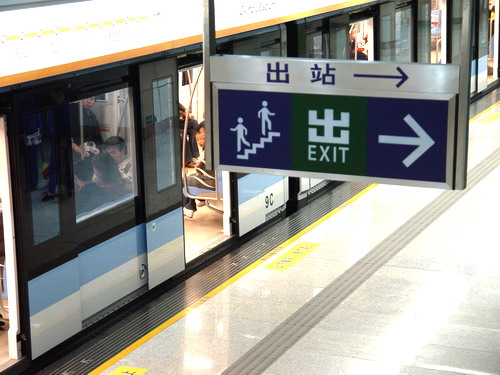
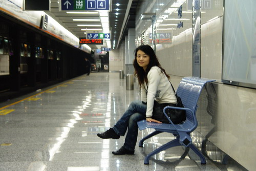
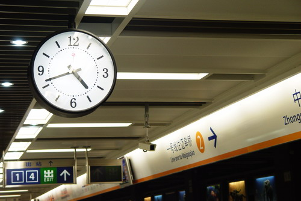

中文网志年会上几个人谈到南京，居然有人还不知道南京有地铁了，我有义务做个宣传。



有几个视角很好,是SONY F717??
车上扶手好密集!
漂亮的站台，和人 呵呵
通地铁了？感觉工程还蛮久滴。几年前看报纸，说是还计划通到隔壁的马鞍山市阿，现在实现了？
“新模范马路”，这个名字比较强，有机会去南京一定去看看，坐坐南京的地铁
站台上没有屏蔽门？这样不太安全。
哇，地铁修好了。那年去时正修了。
新建的地铁永远比旧的好，北京的地铁还要人工售票检票呢，广州的地铁也破旧了很多。
没去过南京，有不知道有地铁，不过，看起来很干净哦
缘于一次无意的google认识你,吸引我的是你和狗狗悠闲的坐着,这个下午突然相信这是一种相识的缘份.冒昧的问声hello.留下我的MSN给你...- 喜欢你的北京女生
增加一个屏蔽门 成本至少要增加几个亿；好处就是防止卧轨事件和高跟鞋被卡在门缝等意外事件。 听说深圳的地铁有这个门，学HK.
是啊，南京通地铁了，要了解更多欢迎到南京地铁风网站上看。http://www.njmetro.cn
哦，对，是索尼(sony)Cybershot相机。
你是在元通站拍的吧？那站人特少，而且小。
南京火车站造好了么???...
增加一个屏蔽门不仅仅为了安全，可以有效控制能源、利用更充分，比如空调、供暖等。
哇, 很吃惊.很现代,很干净.
很不错，我对南京地铁狠感兴趣，如果可以的话希望和你交流一下
存档只读，评论已关闭。
Name (required)
Email (will not be published) (required)
Website
« 11年记忆的影：虎子 | 记录＊遗忘 »


17 Responses to “南京地铁”
2005-11-17
有几个视角很好,是SONY F717??
2005-11-17
车上扶手好密集!
漂亮的站台，和人 呵呵
2005-11-17
通地铁了？感觉工程还蛮久滴。几年前看报纸，说是还计划通到隔壁的马鞍山市阿，现在实现了？
2005-11-17
“新模范马路”，这个名字比较强，有机会去南京一定去看看，坐坐南京的地铁
2005-11-17
站台上没有屏蔽门？这样不太安全。
2005-11-17
哇，地铁修好了。那年去时正修了。
2005-11-18
新建的地铁永远比旧的好，北京的地铁还要人工售票检票呢，广州的地铁也破旧了很多。
2005-11-18
没去过南京，有不知道有地铁，不过，看起来很干净哦
2005-11-18
缘于一次无意的google认识你,吸引我的是你和狗狗悠闲的坐着,这个下午突然相信这是一种相识的缘份.冒昧的问声hello.留下我的MSN给你...- 喜欢你的北京女生
2005-11-18
增加一个屏蔽门 成本至少要增加几个亿；好处就是防止卧轨事件和高跟鞋被卡在门缝等意外事件。
听说深圳的地铁有这个门，学HK.
2005-11-22
是啊，南京通地铁了，要了解更多欢迎到南京地铁风网站上看。http://www.njmetro.cn
2005-11-22
哦，对，是索尼(sony)Cybershot相机。
2005-11-23
你是在元通站拍的吧？那站人特少，而且小。
2005-11-23
南京火车站造好了么???...
2005-12-01
增加一个屏蔽门不仅仅为了安全，可以有效控制能源、利用更充分，比如空调、供暖等。
2005-12-20
哇, 很吃惊.很现代,很干净.
2006-02-14
很不错，我对南京地铁狠感兴趣，如果可以的话希望和你交流一下
Leave A Reply
存档只读，评论已关闭。